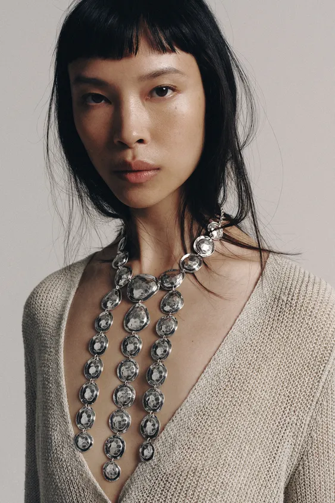
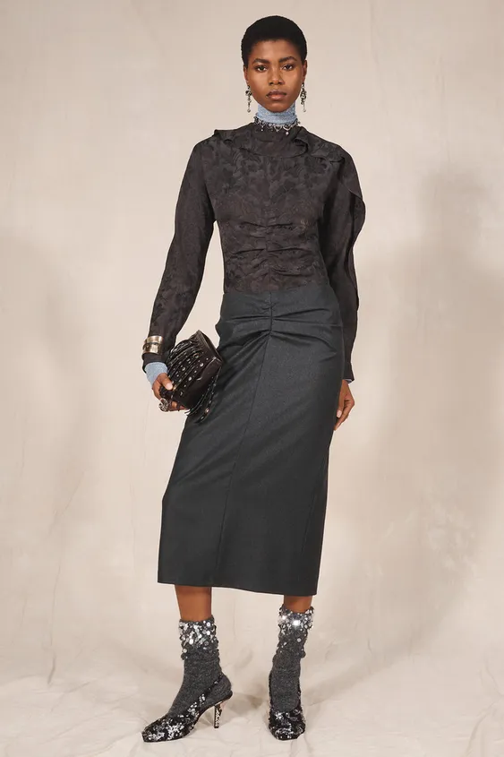
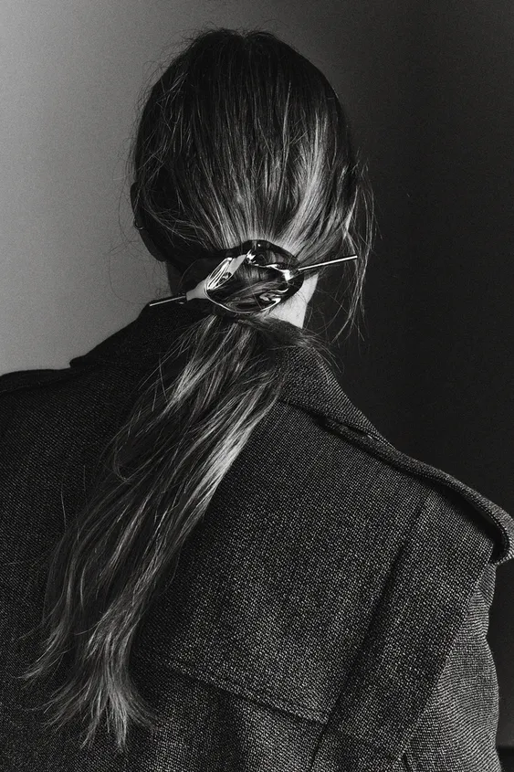
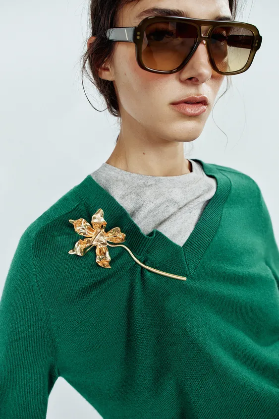

一套黑色西装，配长耳饰时，目光容易停在脸侧；换成醒目的项链，重点便移到领口和胸前。衣服没有改变，人的形象却可以从利落转向华丽，或从日常转向更有仪式感的穿着。
配饰之所以能产生这样的作用，与它所在的位置、占据的面积和反光方式有关。耳环靠近脸，项链连接颈部与衣领，手链随着动作出现，发饰则直接改变头发的轮廓。理解这些关系，比记住某一种“标准搭配”更有用。
把范围放到完整穿着中，配饰还包括胸针、丝巾、眼镜、帽子、腰带和包。它们有不同的尺度：一枚戒指可能在交谈或抬手时才被注意，一只包和一条腰带则会直接进入全身轮廓。搭配时，可以先判断自己希望改变哪个位置，再选择相应的物件。
耳饰与项链：目光停在哪里

图片来源：ZARA 长款金属亮饰耳环。
这套造型里，黑色西装的翻领向下延伸，胸前没有佩戴项链，长耳饰的亮点集中在脸的两侧。头发拨到耳后，耳饰的轮廓便能完整露出来。
西装提供了清楚、连续的深色线条，耳饰则加入细碎的反光。两者在面积上相差很大，装饰感因此集中而明确。假如再在领口加入一条同样醒目的项链，胸前也会成为观看重点，整套造型便会向更浓重的晚装效果靠近。
耳饰的差别，也不只是“大”和“小”。贴耳的耳钉形成小而稳定的亮点；圆环会画出清楚的曲线；垂坠耳饰把线条向下带，并随着转头轻微摆动。它们与发型、肩线的距离，比单独看首饰时更值得留意。长耳饰若刚好碰到高领或蓬松的肩部，容易与衣服挤在一起；露出耳朵、换一个领口，就可能让同一件耳饰清楚许多。

图片来源：ZARA 多片式金属项链。
另一套造型把重点放在胸前：大小不同的银色金属片沿颈部排列，几列垂饰顺着针织衫的深 V 领向下延伸。针织表面的纹理细密、光泽较弱，金属片则轮廓清楚、反光明显。
这条项链已经占据相当大的面积，几乎参与了上衣的设计。V 领留下的开口让它有展开的空间，金属的硬质感又与柔软针织形成差别。换成紧密的小圆领，项链与衣服重叠的位置就会改变，效果也需要重新判断。
因此，选择项链时，可以先看它最终落在哪里。短链靠近颈根，吊坠会形成向下的线条，长链则可能落在胸口以下。最容易显得局促的位置，是吊坠恰好卡在领口边缘：既没有完整露出，也没有自然落在衣料上。调整几厘米，往往比换一条更昂贵的项链有效。
手链、手环与戒指：动作中的细节
手链通常指可以弯曲、随手腕活动的链状饰物；手镯、手环以及开口的宽腕饰，形态往往更固定。商品名称有交叉，实际选择时，看它是柔软的线条还是硬质的块面，更容易理解差别。
细手链会随着抬手、拿杯子的动作偶尔露出来，装饰感比较分散。宽金属腕饰占据的面积更大，在远处也能看见，容易成为造型的重要部分。

图片来源：ZARA 限量款宽金属亮饰腕饰。
这张照片里的装饰并不少：耳饰、颈部亮饰、手腕的金属、手包与闪亮短靴同时出现。深色衣服构成了大面积背景，装饰分布在头部、手部和脚部，形成一套浓重的活动造型。
这些配饰共同服务于华丽的活动造型。它们分布在不同部位，颜色又集中在深色与金属光泽之间，因此即使数量较多，仍能看出彼此的联系。如果希望穿得轻松一些，可以保留腕饰，换掉亮饰鞋或颈部装饰，整套穿着的装饰感就会减弱。
腕饰还需要与袖口一起看。细手链容易藏进宽松袖子；有体积的手环可以接在卷起的衬衫袖口下方。冬天把腕饰戴在贴身针织袖外，也会形成明确的装饰位置，但是否舒服、会不会勾住衣料，仍要通过实际活动来判断。
戒指则把重点缩小到手指。细戒叠戴呈现多条线，宽戒或有明显戒面的款式更像一个小块面。若手腕已经有醒目的手环，戒指可以轻一些；若上半身很简单，也可以让一枚有体积的戒指承担主要装饰。拿手机、提包和握手时，它们都会进入别人的视线。
手表也会参与这里的关系。细皮表带与较薄表盘容易接在衬衫袖口下面，宽金属表带则会形成更清楚的亮面。若手表、手环和几枚戒指都戴在同一侧，手部会显得集中而丰富；希望细节分散一些时，可以把戒指放到另一只手，或减少其中一件。需要关注的是实际的分布与活动，不必按固定件数计算。
发饰改变的，不只是头发上的装饰

图片来源：ZARA 椭圆金属发夹。此图为黑白照片。
照片中，椭圆形发夹固定在低马尾上，横向的细杆与向下垂落的头发形成交叉。发夹表面的起伏带出亮暗变化，衣服的织纹和头发则提供了不同的纹理。
这件配饰的作用包括两部分：固定头发，并让后脑勺多出一个清楚的形状。低马尾保留了自然垂落的头发，金属发夹又让它显得经过整理。由于照片是黑白的，这里能直接比较的是形状、纹理与明暗；商品页另将实物标为金色。
换成蝴蝶结、发箍或大抓夹，改变的还会包括头部宽度、头发聚拢的位置和露出的颈部面积。发饰与耳饰因此需要一起试：把头发收起之后，一对原本藏在发间的耳环，可能突然成为整张脸旁最醒目的部分。
胸针、眼镜与帽子：改变脸部附近的形状

图片来源：ZARA 大号金属花朵胸针。
这套造型把一枚有长茎的金色花朵胸针别在绿色 V 领针织的一侧。花朵靠近肩部，细茎则沿领口附近伸展。它没有占据胸前正中，却让原本连续的针织表面出现一个明确的亮点。
胸针的位置可以主动选择，这是它与项链的重要区别。别在翻领上，重点接近脸；移到较低的胸前，观看位置也会随之下降。图中的花朵带有立体起伏，反光与针织的细密表面形成差别。换到薄而软的衣料上，还需要检查重量会不会把布面向下拉。
照片同时用了大框墨镜。它在眼睛周围画出较重的深色边界，胸针则把另一个重点放在稍低的一侧。两者形状、位置不同，并没有堆在同一小块区域里。这里的精细感，来自各件配饰之间清楚的分工。
眼镜的镜框宽窄、镜片深浅，都会参与面部形象。透明镜片保留更多眼神，大面积深色镜片则会减少眼部的显露；这会影响观看感受，也解释了为什么同一副墨镜在户外照片中有效，坐到室内面对面交谈时却未必合适。
帽子还会改变头部的外轮廓。宽帽檐向两侧展开，贝雷帽增加头顶附近的体积，棒球帽则将线条向前延伸。帽子、耳饰与衣领可以一起看：若帽檐已经较宽、衣肩也很蓬松，再加入较长耳饰，脸旁的空间便会变得紧密。
丝巾、腰带与包：从局部装饰走向全身比例
丝巾可以加入颜色，也会改变领口的形状。窄窄地折起、在颈侧打结，主要留下细线与小结；展开成三角形，便形成面积更大的色块。结打在正中、侧面或较低位置，都会改变视线落下的方向。
例如，用米白衬衫与深色长裤作搭配练习：把一条带有深蓝图案的丝巾系在领口，深色便从裤装延续到脸部附近；改为系在包柄上，同样的图案会移到身体侧面。颜色没有改变，装饰所在的位置已经不同。
较厚的围巾与手套，则更直接地参与秋冬外套。厚围巾会增加颈部体积，也可能遮住原本漂亮的领子；将两端垂下来，又会在大衣正面留下长线。皮质手套与针织手套的表面和轮廓不同，可以分别与外套的光泽、包和鞋一起比较。
腰带标出身体的横向分界。一件直身连衣裙不系腰带时，轮廓可以连续向下；系上腰带，收束的位置就变得明确。细腰带只画出较轻的一条线，宽腰带会占据更大面积，有明显扣头时，正面还会多出一个中心。
因此，腰带的价值不必只用“显瘦”解释。它也可能强调高腰、改变宽松衣服的展开方式，或让简单服装增加硬质细节。若衣服本身已有复杂褶皱、抽绳或醒目扣子，再加一条腰带，就需要看这些结构是否挤在一起。
包的影响甚至更大。软包会随着身体、手臂和所装物品改变形状；硬挺的小方包或手拿包，会留下较稳定的边界。短肩带把包留在腋下附近，较长肩带让它落到腰胯，斜挎背带则在胸前增加一条斜线。
选包时，将它背到身上比只拿在手里更有参考价值。包落在外套最宽的位置，身体侧面的体积可能进一步增加；把背带调短或调长，又可能让轮廓重新分开。晚间活动若需要较轻巧的形象，小包可以减少携带的体积；需要装电脑与日常物品时，尺寸则先服从真实用途。
材质怎样让配饰与衣服发生关系
同样大小的首饰，表面不同，存在感也会不同。
镜面金属的亮暗变化较集中，容易从哑光衣服上显现出来；拉丝或做旧表面的反光更分散；透明、半透明的珠饰还会与皮肤和衣料的颜色叠在一起。圆形珍珠的曲线与柔和光泽，可以与挺括西装形成差别，也可以接近缎面服装本身的光泽感。
金色与米白、驼色放在一起，常能形成接近的暖色关系；银色与灰、黑、蓝搭配，容易显出较冷的金属感。反过来，用银色配棕色、金色配深蓝，也能通过差别形成重点。比起先规定某种肤色只能戴某种金属，更实际的办法是把首饰放到脸旁，再连同上衣一起看。
还要留意衣服已经拥有的装饰。金属纽扣、拉链、腰带扣和手包链条，都在参与整套搭配。它们不必全部同色，但如果银色耳环、金色项链、玫瑰金表带和醒目的包扣同时出现，每一处都很突出，就容易显得零散。让其中一种颜色或形状重复出现，能把不同部位联系起来。
鞋履也可以与配饰一起看。光面鞋、金属包扣和镜面耳环之间，可以通过光泽形成联系；柔软皮包、麂皮鞋与拉丝金属，则会呈现另一种较少强烈反光的组合。联系可以来自材质、颜色或形状，选择其中一两项重复，就能让不同物件彼此接近。
袜子与脚链的细节主要出现在裤脚或裙摆以下。鞋袜颜色接近时，脚部较连贯；明显不同的袜色会标出脚踝附近。脚链需要有露出的空间，若被长裤或靴筒完全盖住，装饰便难以显现。它们适合在全身搭配最后阶段，再决定是否需要加入。
香水：近距离才出现的部分
香水不提供可见的线条，却会参与别人靠近时的感受。它适合与服装放在一起考虑，但不需要按衣服颜色寻找对应香调。
例如，ZARA 对 Golden Decade 的介绍提到柑橘开场、橙花与香草。这样的文字提供了试闻的线索，实际穿在身上的甜度、扩散和变化，还需要亲自感受。ZARA：Golden Decade
在约会、餐厅或办公室里，彼此距离较近，气味的浓度会直接影响相处的体验。试香时可以先少量使用，过一段时间再判断，并留意同处一个空间的人的感受。别人靠近后才闻见，与人在远处就被香气包围，是两种不同的相处距离。
同一套衣服，怎样改变场景
仍用白衬衫、深色长裤与一双简单鞋作练习。见朋友时，可以配小耳环、手表或细手链，再背一只方便活动的软包。袖口自然露出手腕，细节主要在近距离出现，包则承担较大的轮廓。
约会或去餐厅时，交谈中的脸部与手部更容易被注意。可以把头发收起，换成长一点的耳饰，胸前保留相对简单的开口。若更喜欢项链，就让它与领口建立清楚的关系，耳饰改为较小的款式。拿杯子、抬手和坐下之后，再看腕饰是否与桌面或衣袖不断碰撞。
参加晚间活动时，同一套衣服可以换上更有体积的耳饰或宽腕饰，加入硬挺小包。增加光泽的位置已经足够明确，鞋子可以接近其中一种材质；若还要加入胸针或丝巾，便需要重新观察领口附近是否过满。这里调整的是整套穿着的装饰程度。
实际试穿时，可以先戴上最希望保留的一件，再逐步加入其他物件。每加一件，看看它改变了哪里：是让脸更醒目，还是让腰部被分开；是与已有细节形成联系，还是多出一个孤立的重点。最后退后看全身，再转身、坐下、抬手，配饰需要在这些真实动作中成立。
资料范围：案例取自 ZARA 美国官网公开商品说明与佩戴图片，核对日期为 2026 年 10 月 25 日。搭配效果为本文对照片的分析；香水部分依据品牌说明，未作实物试香。图片版权归原权利人所有。
留言
由 Disqus 提供。